Raidlight
Ultralight
24–30 L330 g
Mon compromis course / autonomie.
219,90 €*Raidlight Photo : Malik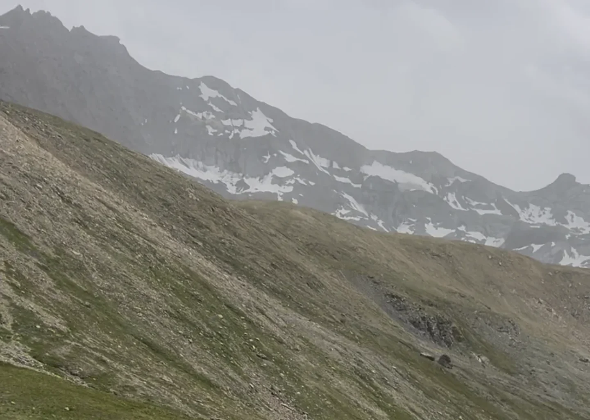
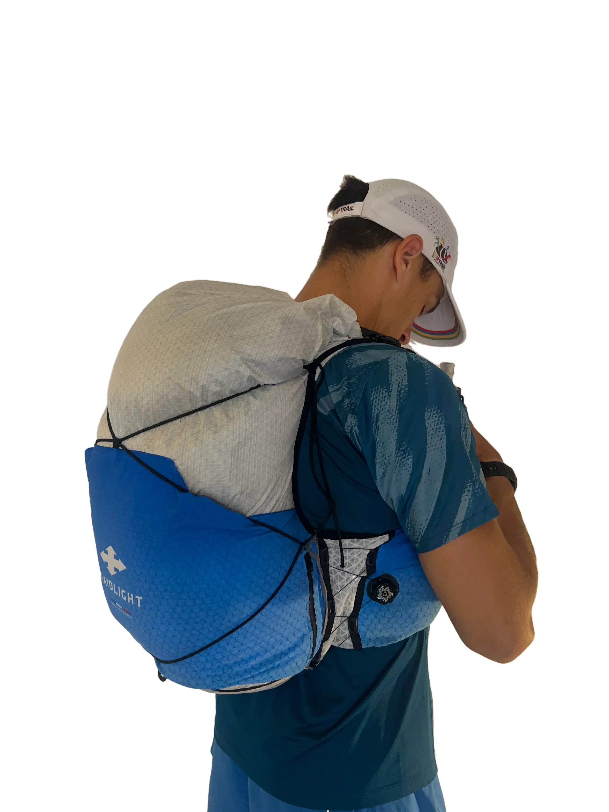
Tests matosSacsFastpacking
Grande Traversée des Alpes · Été 2026
Le sac qui m’a accompagné sur la Grande Traversée des Alpes.
330 g, un vrai portage gilet et juste ce qu’il faut de volume pour courir, marcher et vivre dehors.
Mon retour après 644 kmLe sac, chargé comme sur le terrain
644 kmsur la GTA
35 000 m D+de dénivelé positif
20 joursen solo autonome
7–8,5 kgde charge habituelle
L’essentiel
C’est avec ce sac que j’ai parcouru près de 650 km à travers les Alpes, entre rando et trail en autonomie.
Pourquoi ce sac ?
De tout mon matos, le sac à dos est clairement l’élément sur lequel j’ai le plus galéré. Le défi : trouver un sac autour de 30 L (voire un poil moins) qui ne soit ni un gilet de trail trop minimaliste — pas assez modulable pour un mois en autonomie — ni un sac de rando trop lourd et rigide, inadapté à la course. Cet entre-deux, croyez-moi, c’est pas évident à trouver.
J’ai essayé le Montane Trailblazer 32 L (trop fragile d’apparence, trop étroit), un Kiprun 900 20+5 L (trop petit, portage bizarre), puis je me suis rabattu sur l’Osprey Talon Velocity 30 L. Sur le papier, le bon compromis : gilet à l’avant, portage arrière accessoirisé. Mais toujours un souci : 1 kg sur la balance, un volume un peu surdimensionné, et surtout il me blessait au bas du dos en courant (oscillations verticales, dos trop rigide). Faute de trouver mieux, je comptais quand même partir avec lui, en me disant que je finirais bien par trouver une solution à ces problèmes.
Finalement, deux semaines avant le départ, je fais des essais sur plusieurs jours. Et là, je dois me rendre à l’évidence : si le sac me blesse déjà, ça ne va pas être tenable pendant un mois. C’est à ce moment-là que je tombe sur le Raidlight Ultralight 24–30 L. Je l’achète un peu en désespoir de cause… Spoiler : ce sac a sauvé ma GTA.
Je suis parti léger, entre rando et trail, avec 7 à 8,5 kg sur le dos, eau et nourriture comprises. Dans ce petit sac, j’avais tout mon matériel pour traverser les Alpes, y compris de quoi bivouaquer.
Avec un sac aussi petit, les gens que je croisais pensaient souvent que j’allais de refuge en refuge. Mais non, non : tout rentrait dedans ! Il faudra d’ailleurs que je vous fasse un article avec le détail de mon matos.
Je n’ai pas utilisé les flasques Raidlight fournies. On m’avait prévenu qu’elles étaient peu fiables, ce que j’ai confirmé plus tard sur un autre sac de la marque. Je suis donc parti avec mes propres flasques.
Fiche technique
Prix et offre newsletter constatés au moment de l’achat.
Les essais
Avant de choisir le Raidlight, j’ai essayé ces trois sacs. Voici ce qui m’a fait préférer le Raidlight pour ma GTA.
Raidlight
24–30 L330 g
Mon compromis course / autonomie.
219,90 €*Raidlight Photo : MalikOsprey
30 L≈ 1 kg
Bien pensé, mais lourd. Me blessait le bas du dos en courant.
170 €*Osprey Photo : OspreyMontane
32 L920 g
Trop étroit et d’apparence trop fragile à mon goût.
155 €*Montane Photo : MontaneKiprun
20+5 L470 g
Trop petit pour mon autonomie ; portage peu convaincant.
119,99 €*Decathlon Photo : KiprunSur la balance
* Prix officiels hors promotions.
Chez Raidlight
Et chez Raidlight, ça donne quoi ? Voici les autres sacs de la marque pour voir où se place l’Ultralight 24–30 L.
Ce qui m’intéressait dans le 24–30 L, c’était de pouvoir emporter mon matériel de bivouac tout en gardant un portage proche du gilet de trail. À côté, les modèles de 12 et 15 L sont plus petits : on voit vite pourquoi j’avais besoin du volume supplémentaire.
Visuels : Raidlight. · * Prix officiels hors promotions.
Les points forts
Poids & volume
330 g et 24–30 L : tout mon matériel rentrait dedans, sans avoir un énorme sac sur le dos.
330 g, soit près de 700 g gagnés par rapport à l’Osprey. Sur un mois, ça change tout.
Pile ce qu’il me fallait ! Avec le système d’ouverture roll-top, je pouvais ajuster le volume selon ce que j’avais à emporter.
Portage
Stable autour de 8 kg, avec un réglage facile en marchant.
J’avais peur de souffrir sans sangle ventrale… et non. Le dos souple sans armature épouse la forme du corps et sert de surface d’appui. Comme c’est un vrai gilet, ce ne sont pas que les épaules qui portent : toutes les surfaces d’appui travaillent, d’où une super stabilité. Pour ~8 kg, franchement bluffant. (Seul bémol : les trapèzes qui chauffaient en toute fin d’aventure, mais rien d’anormal.)
C’est vraiment le réglage dont je me suis servi tous les jours. Je pouvais serrer ou desserrer le sac en marchant, sans avoir à le poser. Je t’en parle un peu plus bas, avec une vidéo pour te montrer.
Rangements
Des poches accessibles et une place pour les petits essentiels.
J’avais mes snacks, mon téléphone et ma pochette électronique juste devant moi. Pour attraper mes écouteurs ou brancher le téléphone, pas besoin de poser le sac. Ça paraît tout bête, mais quand on passe ses journées dehors, c’est vraiment agréable.
Moins grande que sur un sac de rando, mais assez pour la trousse pharmacie/toilette, la serviette… Et la poche zippée avant pour l’Opinel et le téléphone.
Il quadrille l’extérieur de la poche principale : parfait pour faire sécher les affaires lavées, bloquer la veste de pluie à portée de main, et gagner en stabilité une fois serré.
Durabilité
Le tissu m’a agréablement surpris. Pour les coutures, en revanche, j’ai eu moins de chance.
Pour un sac de 330 g sans armature, je n’étais pas serein au départ. Le tissu a pourtant bien résisté à l’abrasion, même sous le sac, et les poches filet ne montrent pas d’usure. Je faisais attention à mon matériel et je posais rarement le sac.
Mais le tissu ne fait pas tout : une couture dorsale a lâché et celle d’en face était fragilisée. J’y reviens dans les points négatifs.
J’ai eu affaire au SAV Raidlight pendant la GTA, après le souci de couture raconté plus bas. L’équipe a été sympa et réactive. À mon retour à Toulouse, j’ai envoyé le sac : la réparation a été très rapide, et sans frais pour moi.
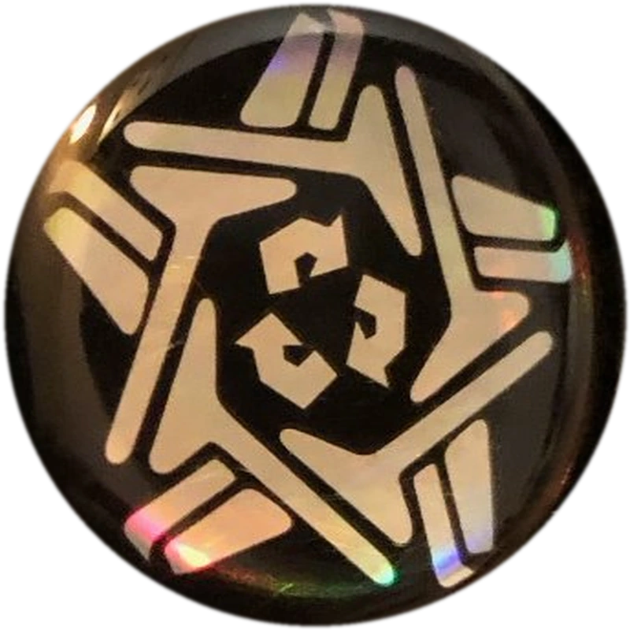
Tourne la molette
Mon coup de cœur
C’est mon coup de cœur sur ce sac. Grâce au système FreeLock, j’ai pu ajuster le serrage tout au long de ma GTA. Le principe : une molette de chaque côté, que je tourne pour resserrer le sac contre moi dans les descentes courues. En montée, je relâche le tout pour respirer à pleins poumons. Tout bête, mais génial à utiliser !
Les points faibles
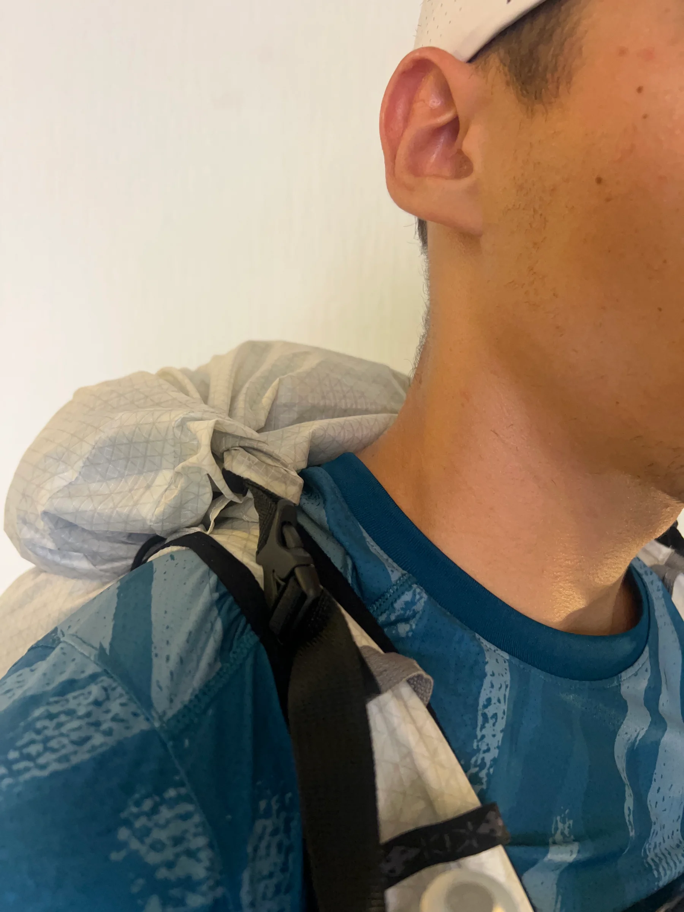
Le roll-topLe haut du sac cherche à se dérouler et fait vriller les clips sur les épaules.L’idée est excellente : une fois roulé, deux clips se fixent sur les bretelles et ramènent le haut du sac vers l’avant (comme des rappels de charge) → meilleure stabilité, mieux pensé que beaucoup de roll-tops. MAIS une fois roulé et clipsé, le roll-top cherche à se dérouler, ce qui fait vriller les clips sur les épaules : inconfortable, et impossible d’ajuster proprement. Il manque juste un bouton-pression ou un aimant pour le verrouiller en son milieu.
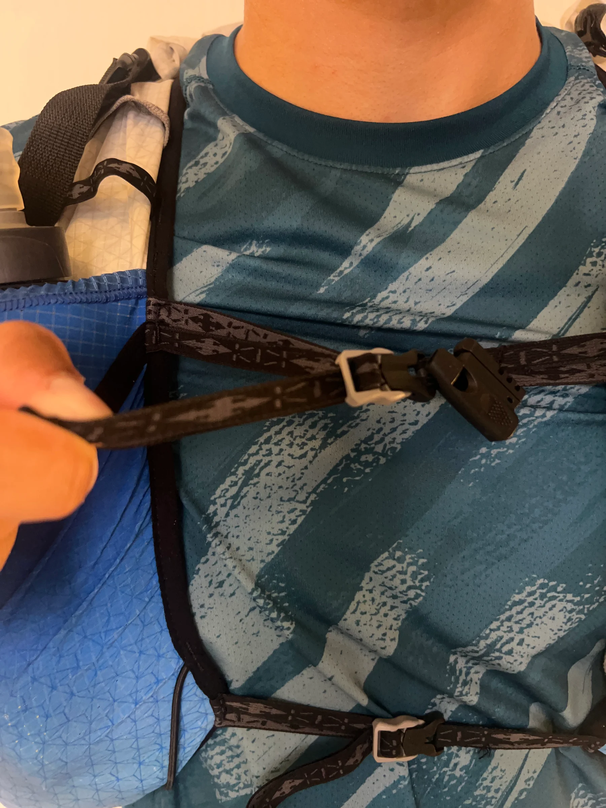
Les sangles pectoralesUn réglage peu fluide et des clips qui frottent parfois sur le torse.Deux soucis : un réglage peu fluide à cause de l’élasticité des sangles (quand on tire pour resserrer, ça tend la sangle au lieu de la faire coulisser — souvent les deux mains nécessaires) ; et, quand je plaquais bien le sac en descente, les clips plastique généraient parfois des points de friction désagréables sur le torse. Deux pistes : des élastiques + passants (façon Compressport ou Salomon), ou carrément du BOA (façon Kailas Fuga).
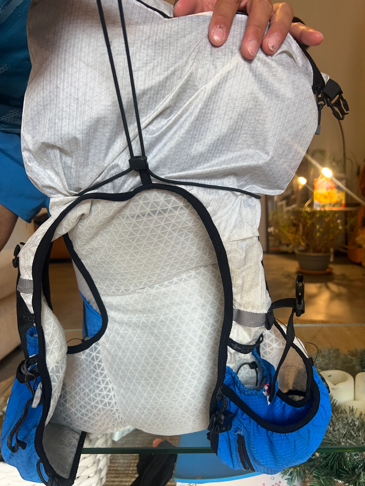
Un rangement qui demande de la rigueurSans armature, un objet mal placé se sent directement dans le dos.Si tu veux remplir ton sac sans te poser de questions, ça peut vite devenir pénible. Le confort dépend beaucoup de ce qu’on met dedans et de la façon de le ranger : il faut optimiser le matériel et éviter les bosses contre le dos.
Le matin, je mettais parfois plus de temps que les autres à plier bagage. C’est le prix à payer pour ce portage minimaliste.
Mon point de vigilance
Dès le deuxième jour, une couture entre le dos et la poche centrale a lâché. Je pouvais presque passer trois doigts dans le trou… Heureusement, je n’avais que de gros objets dans cette poche : rien n’est tombé.
Au jour 3, je me suis donc improvisé couturier face au lac d’Anterne (spoiler : c’est pas mon métier). Ma réparation a tenu jusqu’au bout ! Mais la couture de l’autre côté montrait aussi des signes de faiblesse. C’est vraiment cette zone que je surveillerais.
Si c’était à refaire, je ferais renforcer cette zone avant de partir.
Si j’étais chez Raidlight
Les détails que je changerais. Touche un numéro pour afficher mon idée sur la photo.
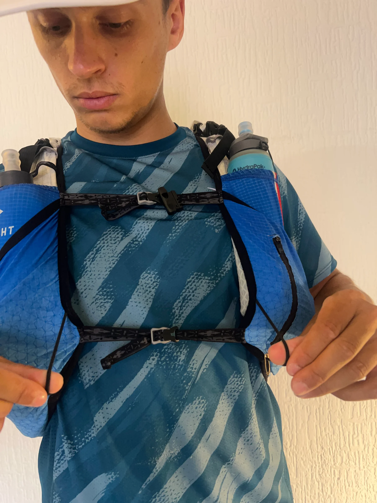
Le bon profil
Ça colle si…
Tu alternes course et marche en itinérance, avec ton matériel pour vivre et dormir dehors. Comme sur ma GTA : 7 à 8,5 kg sur le dos, eau et nourriture comprises, et un rangement soigné.
Moins adapté si…
Ben oui, après tout, c’est déjà galère en marchant, la montagne ! Si tu veux seulement marcher, je regarderais plutôt un sac de randonnée : le portage gilet t’apportera moins.
Idem si tu veux remplir sans réfléchir ou porter régulièrement plus de 9 kg. Le confort baisse au-delà, même si Raidlight annonce 10 kg maximum.
Après 644 km
J’ai adoré ce sac. Après toutes mes galères pour trouver le bon, je ne m’attendais pas à être aussi bien avec un modèle aussi léger. J’avais la place pour tout mon matériel et je pouvais vraiment courir avec. Et le FreeLock… je crois que vous avez compris, j’en suis fan ! Le fait qu’il soit fabriqué en France compte aussi pour moi.
Tout n’est pas parfait : la couture m’a valu une séance de bricolage et le roll-top mérite d’être amélioré. Malgré ça, je le recommande. Il faut simplement rester raisonnable sur la charge : au-delà de 9 kg, je l’ai trouvé nettement moins agréable.
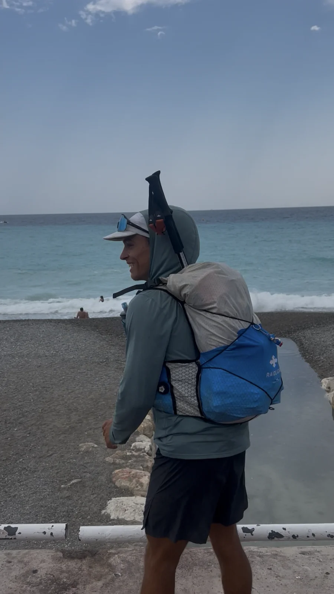
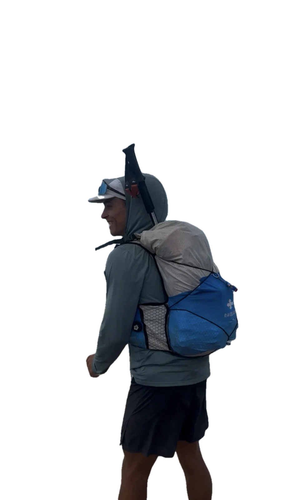
Petit bonus
Après ce retour sur le Raidlight, petit bonus : trois sacs haut de gamme que j’aimerais emmener sur le terrain pour comparer.
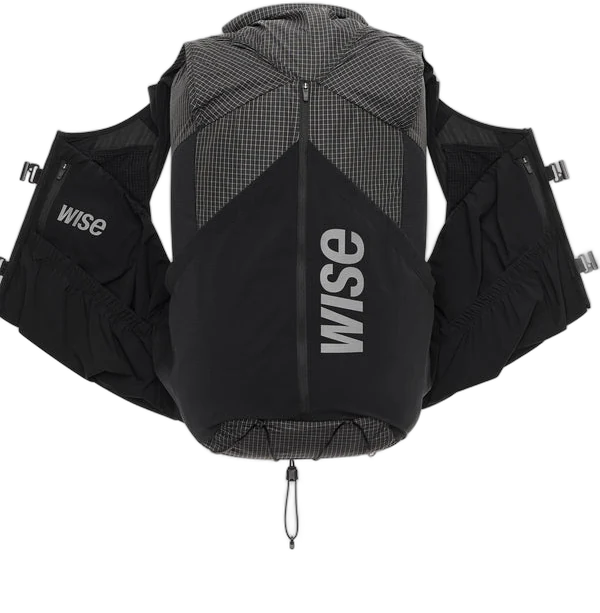
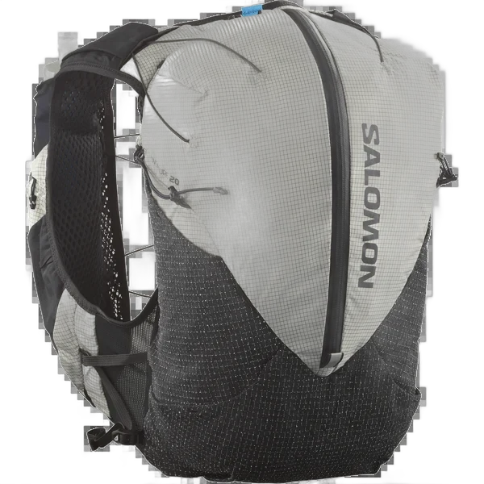
Salomon
Le Salomon Adventure, utilisé en version prototype par Mathieu Blanchard sur le GR20.
230 €Salomon Photo : Salomon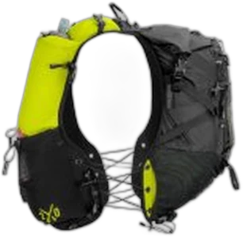
Instinct
Moins connu, mais une ergonomie qui m’intrigue vraiment.
225–255 €Prix selon la version choisie, avec ou sans flasques. Photo : Tonton Outdoor26 photos, du terrain aux détails
Clique sur une image pour l’agrandir.
Ton avis compte
Une question, une remarque sur le test ou ton propre retour sur ce sac ? Écris-moi, je te lirai avec plaisir.
Du côté des marques
Si vous pensez qu’un de vos produits pourrait m’accompagner sur la route ou les sentiers, discutons-en simplement.
Bientôt dans le carnet